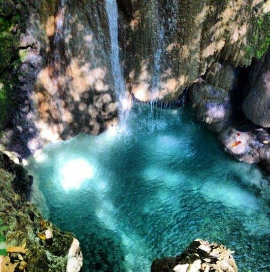
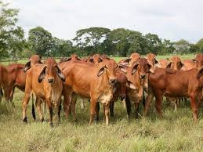

Sucre

Zonas Turisticas
Cienega de la
Caimanera
Posas de Coloso

Rincon del Mar
Tolu
Coveñas

Cuevas Tolu Viejo
Comida Tipicas
Mote de Queso
Mote de Palmitp
Sopa de carne salada
Chicharron

Pescado

Judo ed Corozo
Sector Economico
Agricultura

Ganaderia

Artesania